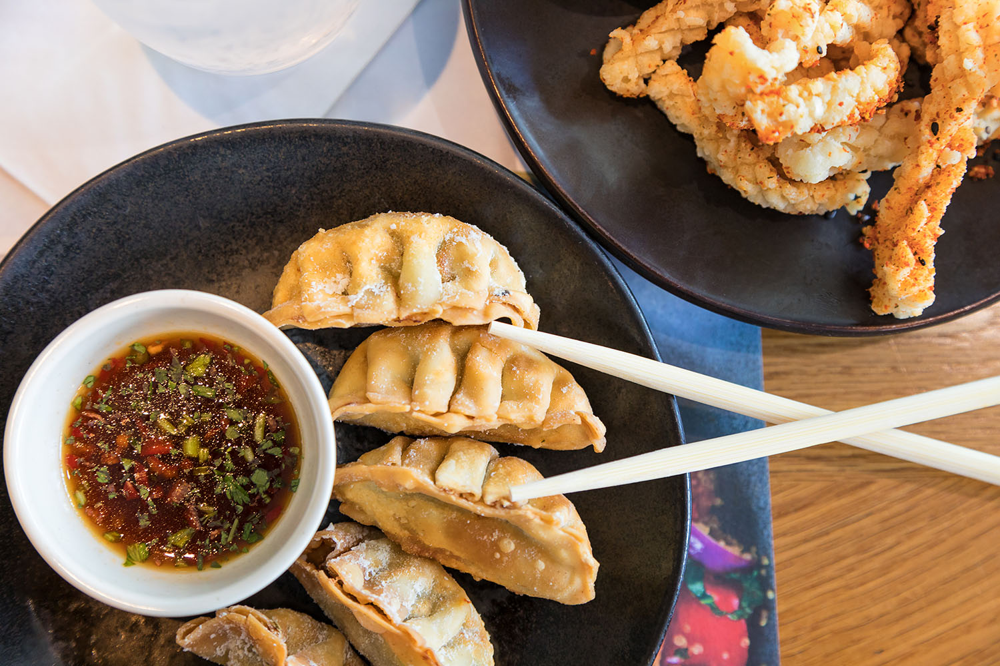

Yoko's Kitchen offers professional catering services for birthdays,
family celebrations, company meetings, and other special occasions.
We prepare fresh and tasty Japanese dishes that are suitable for both
small and large groups.
Our menu includes sushi, noodle dishes, grilled chicken, soups,
vegetarian meals, and homemade sauces. Every dish is prepared with
care and attention to detail so that guests can enjoy authentic
flavors and attractive presentation.

Beautifully served Japanese meals
What we offer
Flexible menu and friendly service
We can create a menu that matches the style and size of your event.
Customers can choose light snacks, full meals, or buffet-style
catering. Vegetarian and special dietary options are also available
on request.
Our goal is to make every event memorable by offering delicious food,
reliable service, and a pleasant dining experience. Yoko's Kitchen
combines traditional Japanese recipes with modern presentation to
create a unique catering service in Tallinn.